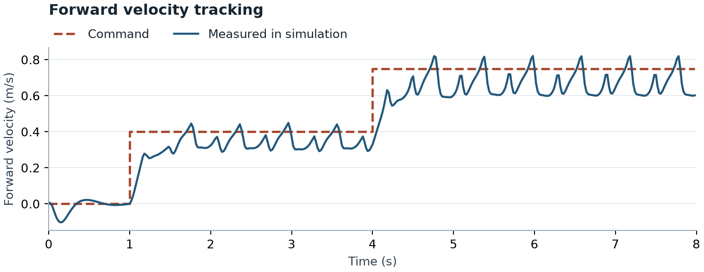
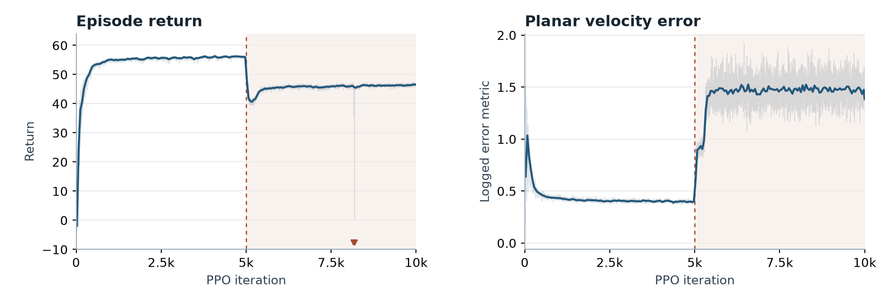
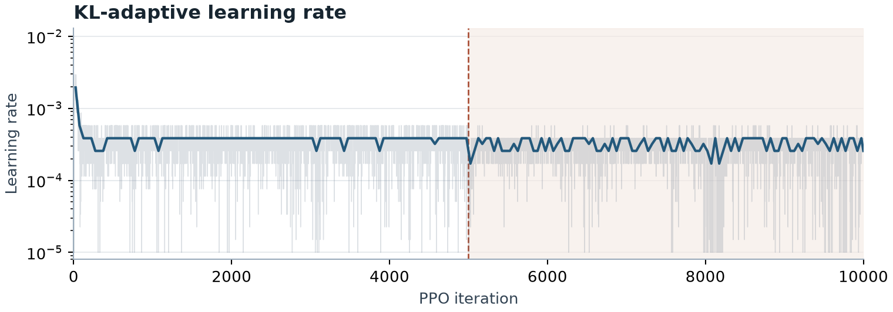
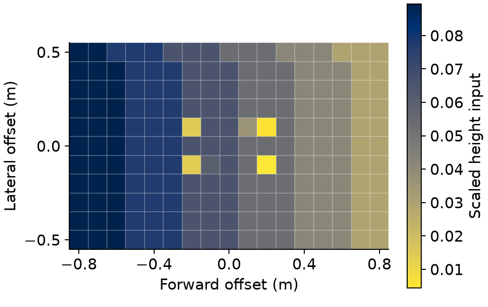
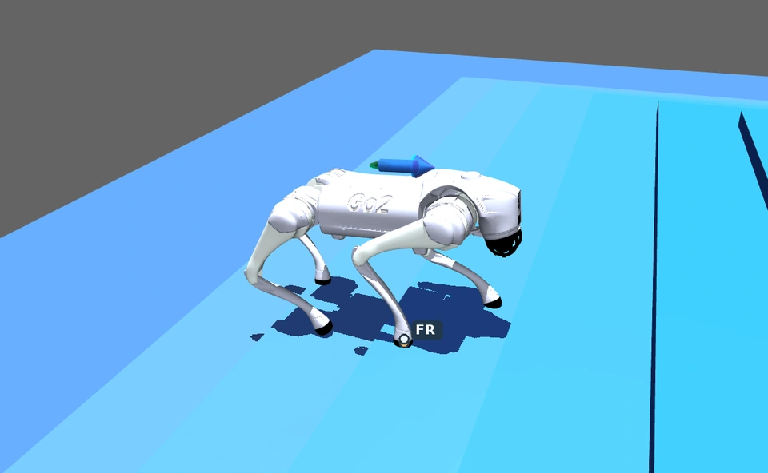
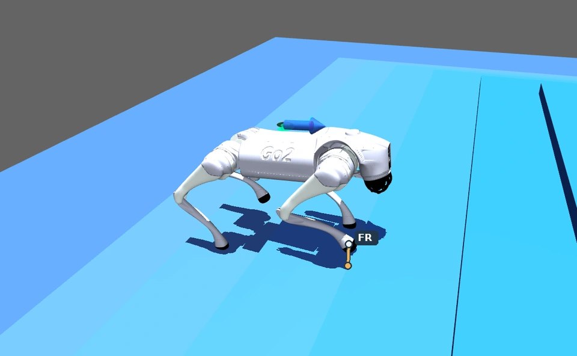
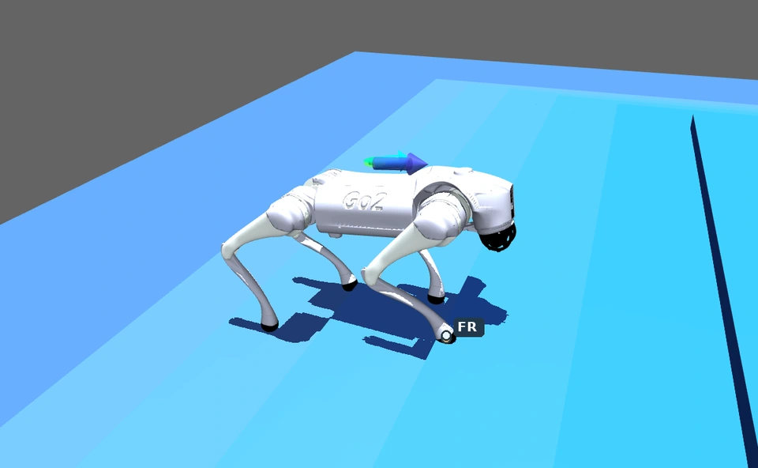
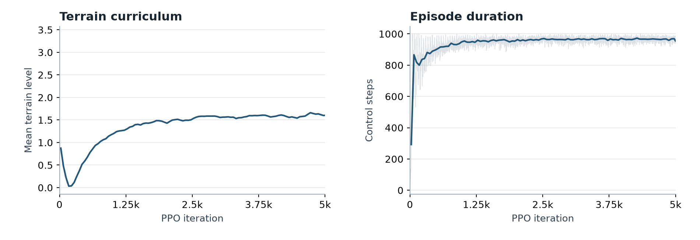
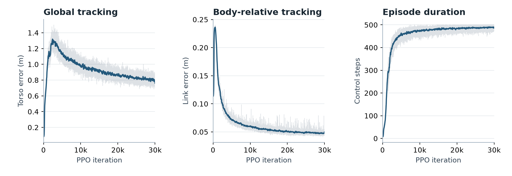

PPO / MuJoCo / Unitree Go2 & G1
机器人强化学习运动控制
Go2 速度追踪、复杂地形运动与 G1 舞蹈跟踪。每项策略在 4,096 个并行 MuJoCo 环境中训练。
Go2 平地速度追踪
如何把期望机身速度变成稳定的四足步态？


从机身速度指令到 12 维关节动作
策略输入47 维观测机身角速度、重力投影、速度指令、步态相位、关节位置与速度、上一步动作
Actor · 50 Hz512 → 256 → 128观测归一化 · ELU MLP
策略输出12 维动作动作乘以 0.25 rad，再叠加默认关节角
Critic · 训练时74 维输入 · 增加基座线速度与足端状态（27 维）
标量价值
优势估计与 PPO 更新
第 5,000 轮扩大线速度范围
前 5,000 轮前向 −0.5 ～ 1.0 m/s · 横向 ±0.5 m/s
后 5,000 轮前向 −1.0 ～ 2.0 m/s · 横向 ±1.0 m/s

速度奖励、步态正则与 KL 学习率
线速度与角速度跟踪各权重 1。接触相位塑造对角步态，脚滑、落地冲击、限位和动作变化率约束执行。
线速度奖励
角速度奖励
以 0.001 为初始学习率，按小批次的新旧策略分布 KL 调整步长。目标 KL 为 0.01。
KL 学习率更新

偏航指令全程为 ±1.0 rad/s。速度误差按最长指令步数归一化并在回合内累加。回报低于 −10 的六轮以向下标记表示。
Go2 复杂地形运动
当脚下出现台阶和斜坡，策略如何利用局部高度调整落脚？


把地形扫描拼接进 Actor
策略输入234 维观测47 维平地观测 + 187 维地形高度
Actor · 50 Hz512 → 256 → 128观测归一化 · ELU MLP
策略输出12 维动作输出腿关节偏移，因局部高差调整落脚
Critic · 训练时261 维输入 · 保留地形观测，增加基座线速度与足端状态
标量价值
优势估计与 PPO 更新
每条射线取传感器高度减地面命中点高度，再除以 5 m。扫描覆盖前后与左右方向。
三个对照场景使用同一策略和 0.55 m/s 前向指令。
抬脚奖励的高度基准
世界坐标抬脚代价
局部离地高度


下一级支撑1.82 s
- 足端世界高度
- 19.06 cm
- 局部地面高度
- 18.00 cm
- 实际离地间隙
- 1.06 cm


向上一级摆动1.98 s
- 足端世界高度
- 25.70 cm
- 局部地面高度
- 18.00 cm
- 实际离地间隙
- 7.70 cm


上一级落脚2.12 s
- 足端世界高度
- 24.80 cm
- 局部地面高度
- 24.00 cm
- 实际离地间隙
- 0.80 cm
右前足落上一级台阶后，世界高度升至 24.80 cm，实际离地间隙降至 0.80 cm。白点为足端 site，橙点为其正下方地面。
奖励改进方案以足下测得的局部地面为基准，在摆动相计算离地偏差。台阶边缘再检查预期落脚点。
按行进距离调整地形难度

G1 舞蹈动作跟踪
如何让 29 关节 G1 跟上参考动作，同时维持平衡与接触？
参考轨迹如何变成全身关节动作
策略输入154 维观测58 维参考关节位置与速度 + 锚点相对朝向、机身角速度、关节状态、上一步动作
Actor · 50 Hz512 → 256 → 128观测归一化 · ELU MLP
策略输出29 维动作按关节力矩上限与刚度缩放，再叠加默认关节角
Critic · 训练时286 维输入 · 增加锚点位置、基座线速度与 14 个身体部位的位姿（132 维）
标量价值
优势估计与 PPO 更新
全局位姿与局部构型分别评分
0.80 m全局 torso 误差 · 衡量整体位移
4.8 cm对齐后肢体误差 · 衡量局部动作

位置奖励、RSI、自适应采样与参考动作
全局位置奖励
相对位置奖励
- 评分权重。 全局位置、朝向各 0.5，相对位置、朝向各 1.0。线速度与角速度跟踪各 1.0。
- RSI 与自适应采样。 从参考片段重置机器人。终止较频繁的时段提高采样概率，均匀项保留全段覆盖。
- 参考动作。 使用已匹配 G1 关节的轨迹。CSV 转 NPZ 负责时间重采样和正运动学，人体动作重定向在上游完成。
三项任务的技术对照
Actor 观测Critic 额外观测
- Go2 平地
- 47 → 74 维
- Go2 地形
- 234 → 261 维
- G1 舞蹈
- 154 → 286 维
共同控制周期
50 Hz 策略每 20 ms 更新关节目标
- 0–5 ms
- 5–10 ms
- 10–15 ms
- 15–20 ms
200 Hz 物理Decimation = 4
关节位置目标
G1 逐关节缩放
动作映射与域随机化
- 关节目标。 Go2 统一缩放 0.25。G1 逐关节设定缩放，膝关节约 0.351 rad，髋俯仰约 0.548 rad。PD 在每个物理步跟踪目标。
- 域随机化。 足端摩擦、编码器偏置和基座质心在启动时随机化，回合中加入速度扰动。足端摩擦范围为 Go2 0.3–1.6、G1 0.3–1.2。